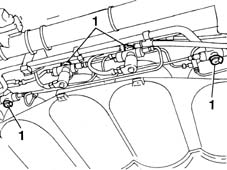
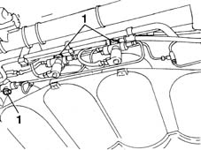
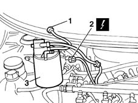
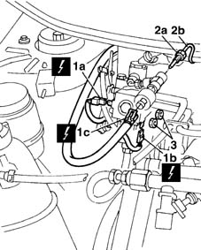
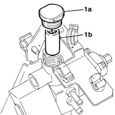
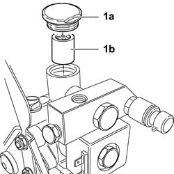

1044E12 GAS PRESSURE CONTROL VALVE ON GAS CIRCUIT - REPLACE
- Path
- Procedures > 10 ENGINE UNIT > 1044 FUEL CIRCUIT PUMP/S AND DEVICES > 1044E GAS PRESSURE CONTROL DEVICE > 1044E12 GAS PRESSURE CONTROL VALVE ON GAS CIRCUIT - REPLACE
- Kind
- repair procedure (removal / refitting; the operation number is the code)
- Applies to
- engines: 1.6 16v; all production periods
- Interactive page
- https://sloeber94.github.io/elrnDB-fMltpl/en/#/2891476
Applies to: engines: 1.6 16v; production: fino a 05/04; only with equipment: BIPOWER and BLUPOWER
 Removing
Removing
 Refitting
RefittingPosition the vehicle on a lift.
Disconnect the negative battery terminal.
Raise the lift.
Applies to: engines: 1.6 16v; production: fino a 05/04; only with equipment: BIPOWER and BLUPOWER
1. Before working on the canisters, place the CNG manual cut out valves in a closed position to prevent the flow of gas.

Applies to: engines: 1.6 16v; production: fino a 05/04; only with equipment: BIPOWER and BLUPOWER
1. Before working on the canisters, place the CNG manual cut out valves in a closed position to prevent the flow of gas.

Applies to: engines: 1.6 16v; production: fino a 05/04; only with equipment: BIPOWER and BLUPOWER
Lower the vehicle.
1. Disconnect the evaporation control system pipe from the rapid connector.
2. Disconnect the electrical connection for the cut out solenoid valve.
Description | Connector | |
|---|---|---|
2 | Fuel vapour recovery solenoid valve |
3. Release the charcoal filter from the rear connector and move it sideways out of the work area.

Applies to: engines: 1.6 16v; production: fino a 05/04; only with equipment: BIPOWER and BLUPOWER
1. Disconnect the electrical connections (1a), (1b) from the cut out valve and (1c) from the pressure sensor releasing the wiring from the bands.
2. Undo the connector (2a) and disconnect the high pressure pipe (2b) supplying CNG.
3. Undo the nuts fixing the reduction unit bracket to the bodyshell.
Description | Connector | |
|---|---|---|
1a | Methane regulation solenoid valve | See L61A METHANE REGULATION SOLENOID ( FRONT ) |
Description | Connector | |
|---|---|---|
1b | Methane regulation solenoid valve | See L61B METHANE REGULATION SOLENOID ( FRONT ) |
Description | Connector | |
|---|---|---|
1c | Methane pressure sensor |

Applies to: engines: 1.6 16v; production: fino a 05/04; only with equipment: BIPOWER and BLUPOWER
1. Undo the protective plug (1a) and remove the filter (1b) from the housing.

Applies to: engines: 1.6 16v; production: fino a 05/04; only with equipment: BIPOWER and BLUPOWER
Refitting
RemovingReplace the filter and fit it in the special housing in the reduction unit.
Tighten the protective plug after having replaced the seal on the plug.
Tighten the nuts fixing the reduction unit mounting bracket to the bodyshell.
Fastening | Component | Ø | Value (daNm) | |
|---|---|---|---|---|
- | Nut | CNG SUPPLY PRESSURE REDUCTION BRACKET | M6 | 0.8 |
Connect the CNG high pressure supply pipe and tighten the connector.
Fastening | Component | Ø | Value (daNm) | |
|---|---|---|---|---|
- | Nut | CNG RECHARGING PIPE CONNECTION | M10 | 2.5 |
Connect the electrical connections disconnected previously and secure the wiring using the bands.
Applies to: engines: 1.6 16v; production: fino a 05/04; only with equipment: BIPOWER and BLUPOWER
Position the active charcoal filter in the special housing, securing it to the rear attachment.
Connect the evaporation control system pipe and the electrical connection for the cut out solenoid valve.
Applies to: engines: 1.6 16v; production: fino a 05/04; only with equipment: BIPOWER and BLUPOWER
Place the CNG manual cut out valves in the open position.
Connect the negative battery terminal.
Remove the vehicle from the lift.
Applies to: engines: 1.6 16v; production: da 06/04; only with equipment: BIPOWER
Removing
RefittingPosition the vehicle on a lift.
Drain the high and low pressure circuit as described in the operation
Op. 1042A02 C.N.G. - FUEL SYSTEM SAFETY CHECK
Op. 1044E10 CNG INJECTION SYSTEM PRESSURE REDUCTION UNIT - R R
1. Undo the protective plug (1a) and remove the filter (1b) from the housing.

Applies to: engines: 1.6 16v; production: da 06/04; only with equipment: BIPOWER
Refitting
RemovingReplace the filter and fit it in the special housing in the reduction unit.
Tighten the protective plug after having replaced the seal on the plug.
Op. 1044E10 CNG INJECTION SYSTEM PRESSURE REDUCTION UNIT - R R
Move the CNG cut-off solenoids to open position by hand and check system is efficient.
Connect the Examiner diagnostic equipment in the "Active Diagnosis" ambient, select and carry out "Gas solenoid valve relay" item in order to allow the opening of the solenoid valves and the renewal of the CNG system operating pressure; read the pressure value on the sensor located on the pressure reduction unit in the engine compartment which should be greater than or equal to 14 bar, otherwise it will not be possible to switch from petrol to methane.
Remove the vehicle from the lift.
Op. 1042A06 C.N.G. - FUEL SYSTEM CHECK FOR ANY LEAKS USING ELECTRONIC DETECTOR FOLLOWING OPERATIONS